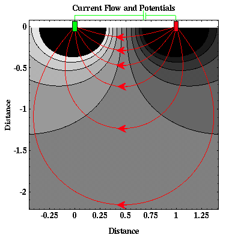

Current Flow From Two Closely Spaced Electrodes
In practice, we will need to place the two current electrodes close to each other. In doing so, however, the current distribution and equipotentials produced within a homogeneous earth become more complicated than those shown previously.
Instead of the current flowing radially out from the current electrodes, it now flows along curved paths connecting the two current electrodes. Six current paths are shown (red lines). Between the surface of the earth and any current path we can compute the total proportion of current encompassed. The table below shows this proportion for the six paths shown above. Current paths are labeled 1 through 6 starting with the top-most path and proceeding to the bottom-most path.
| Current Path | % of Total Current |
|---|---|
| 1 | 17% |
| 2 | 32% |
| 3 | 43% |
| 4 | 49% |
| 5 | 51% |
| 6 | 57% |
From these calculations and the graph of the current flow shown above, notice that almost 50% of the current placed into the ground flows through rock at depths shallower or equal to the current electrode spacing.
Resistivity
- Current Flow and Ohm's Law pg 4
- The Fund. Electrical Property is Resistivity, NOT Resistance pg 5
- Resistivities for Common Earth Materialspg 6
- Current Density and Electric Fieldpg 7
- A First Estimate of Resistivitypg 8
- Current Flow From Two Closely Spaced Electrodespg 9
- A Practical Way of Measuring Resistivity pg 10
- Sources of Noise pg 11
- Depth of Current Penetration V.S. Current ElectrodeSpacing pg 12
- Current Flow in Layered Media pg 13
- Variation in Apparent Resistivity: Layered Versus Homogeneous Media pg 14
- Current Flow in Layered Media Versus Electrode Spacing pg 15
- A Second Example of Current Flow in Layered Mediapg 16